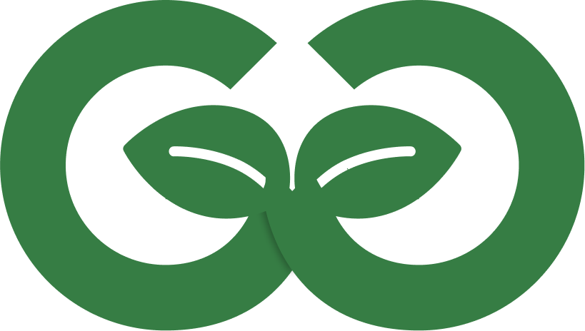

Green Goods makes impact reporting accessible, then legible, verified, and fundable, onchain.
The front door is an offline-first PWA today, with agentic text and voice coming. Underneath, the stack it runs on:
Public, verifiable. Each address counted once.
Live · greengoods.app/impactEvery milestone, captured as verifiable work.
Live · the TAS HUB garden